THE BIONF UNIVERSE
26.01.2026
Vinh Tran
ABOUT ME
KEYWORDS
Homologs = Orthologs ∪ Paralogs

https://bioinformaticshome.com/bioinformatics_tutorials/sequence_alignment/homology.html
QUESTION
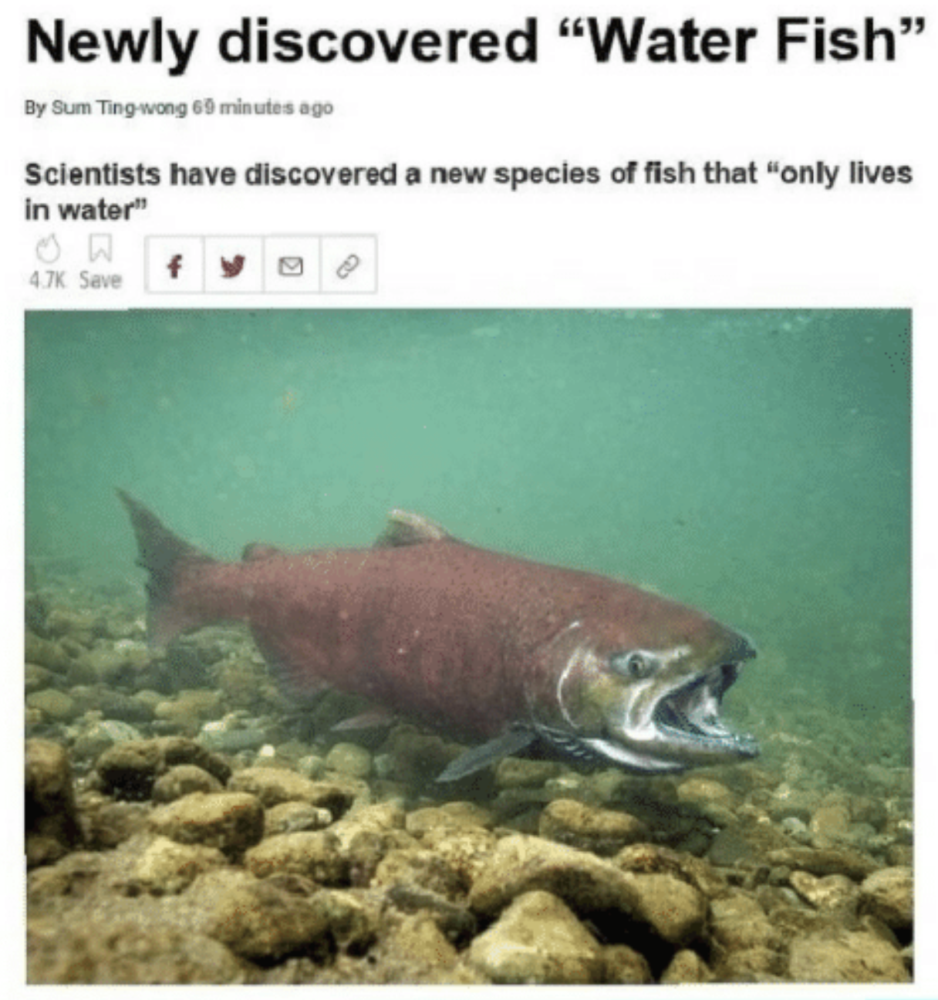
What genetic mechanisms underlie this fish’s
unique phenotype compared to related species?
SEQUENCING
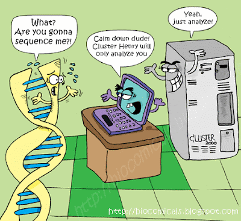

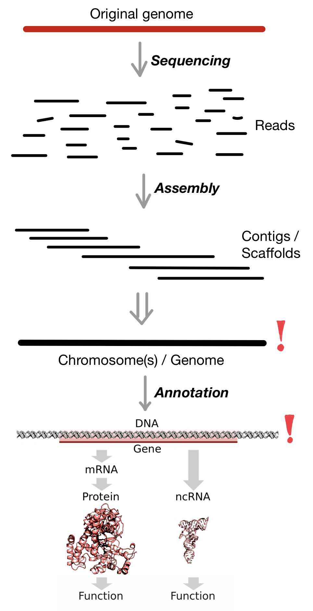
QUALITY CONTROL
Is my genome "clean"?
Contamination
Horizontal gene transfer
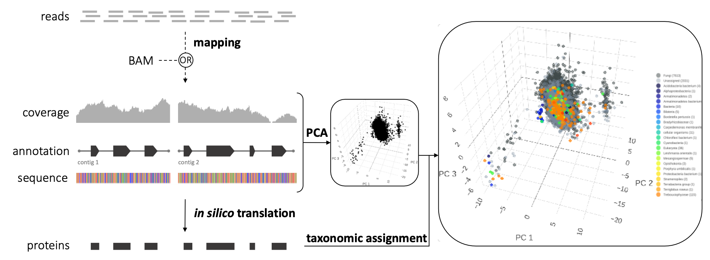
Freya Arthen (2022), Master thesis
Is my gene set complete? And how complete is it?
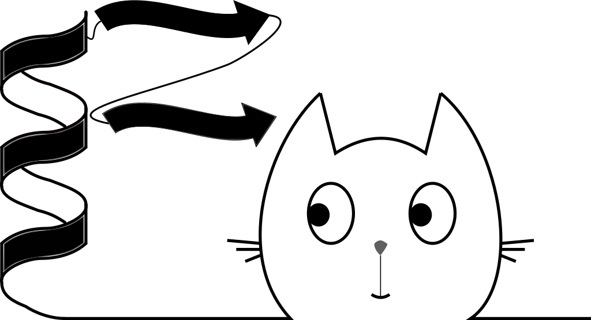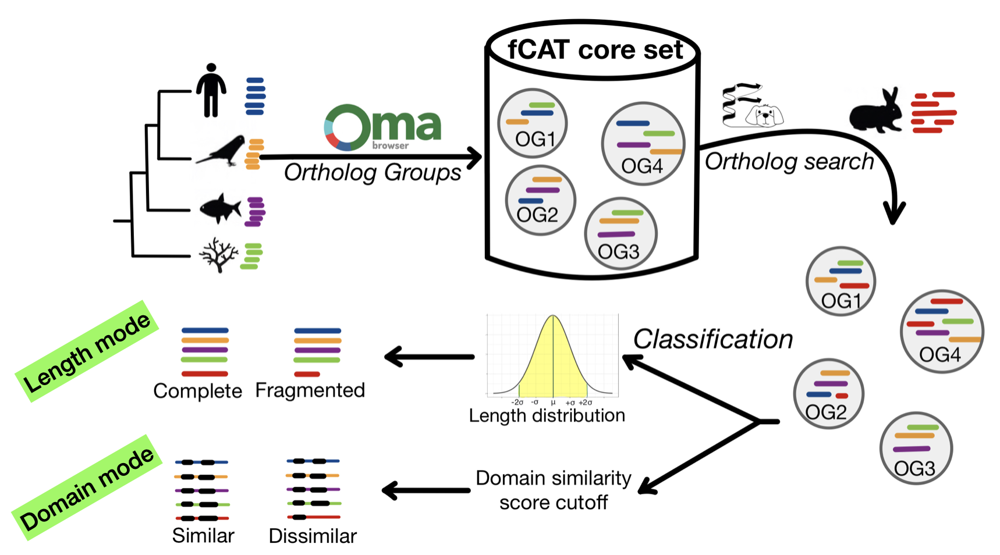
Tran & Ebersberger (2022), https://doi.org/10.7490/f1000research.1119126.1
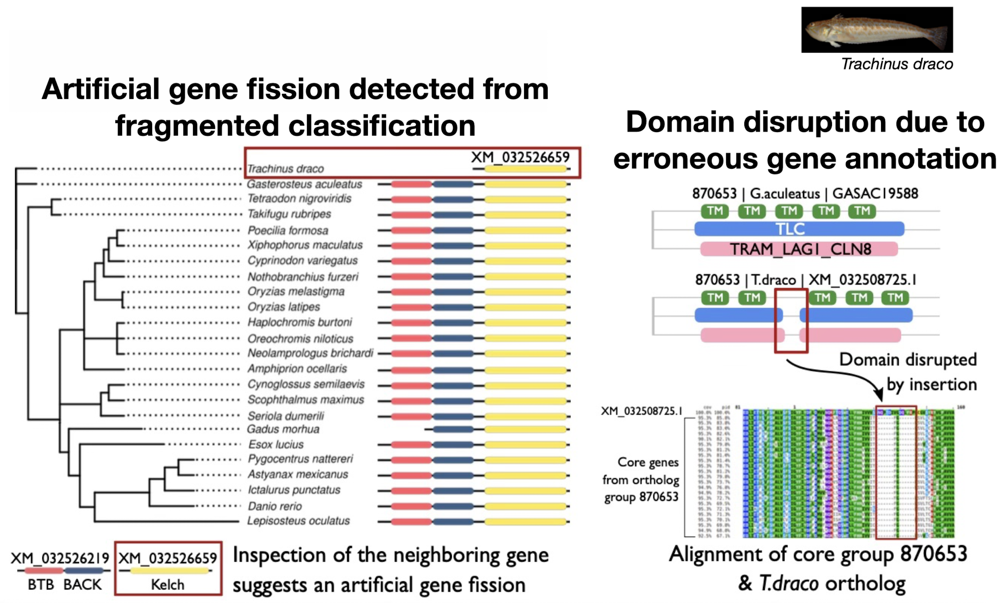
Orthology search
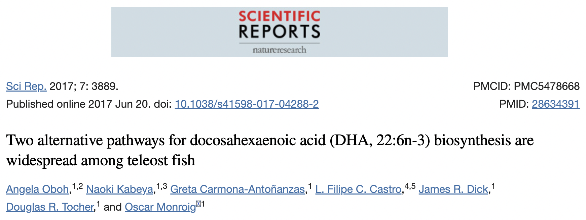 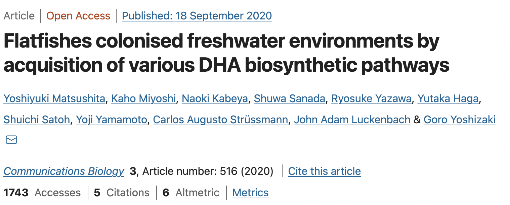
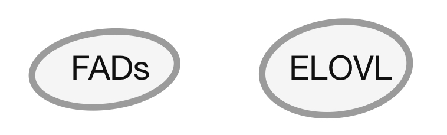
Feature-aware directed (targeted) ortholog search
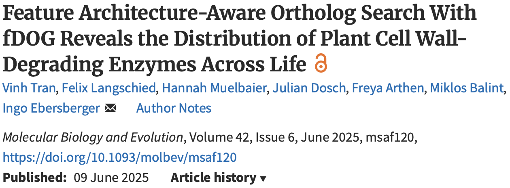 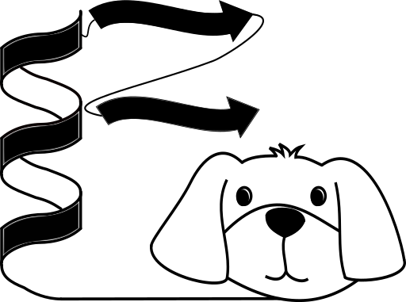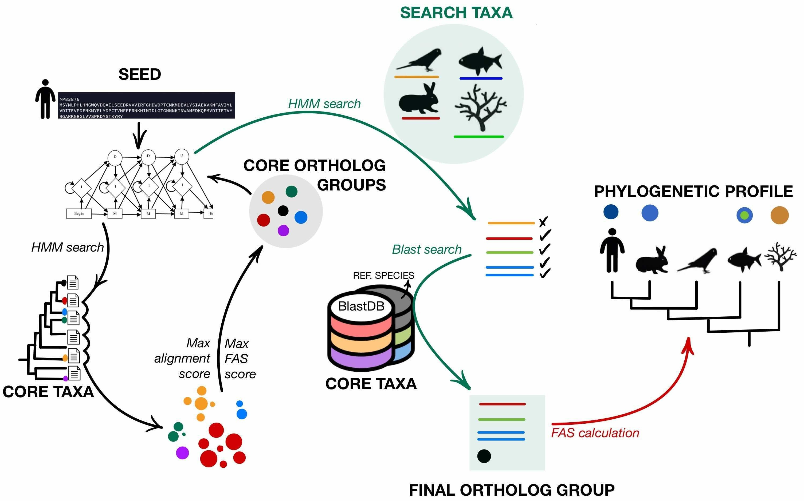
Tran et al. (2025), https://doi.org/10.1093/molbev/msaf120
Phylogenetic profile analysis
Phylogenetic profile

Presence of orthologs ⇒ likely presence of the function
Phylogenetic profile

Similar profiles ⇒ functional association
Visualization and exploration of phylogenetic profiles
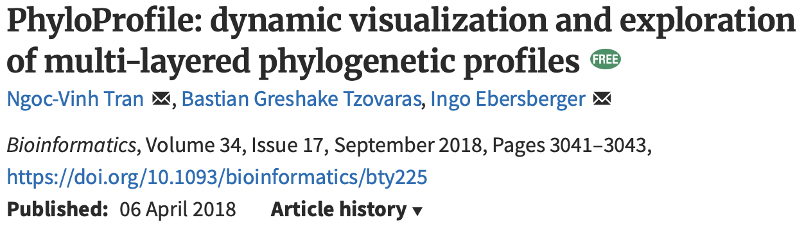
Tran et al. (2018),
https://doi.org/10.1093/bioinformatics/bty225
Tran & Ebersberger (2025),
https://doi.org/10.48550/arXiv.2504.19710

Protein feature comparison
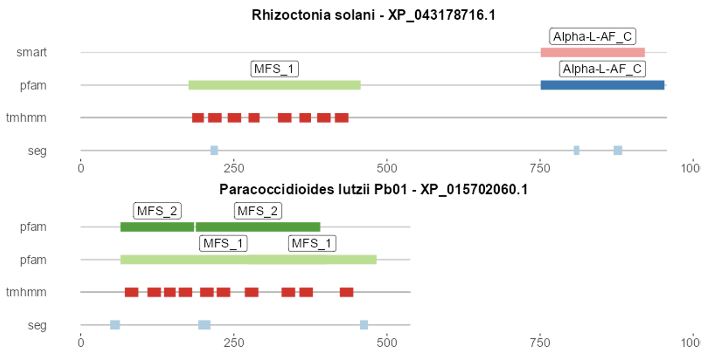
Protein feature architecture comparison
Feature architecture similarity (FAS)
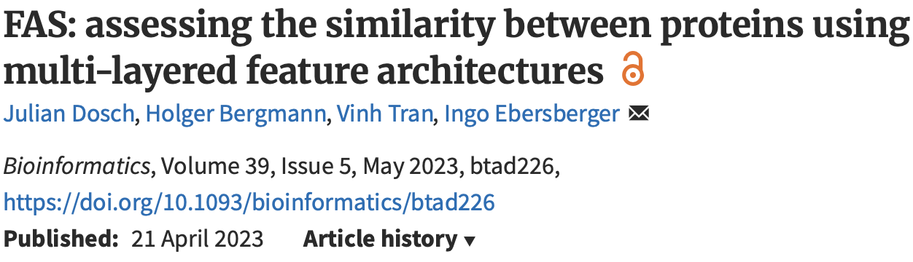 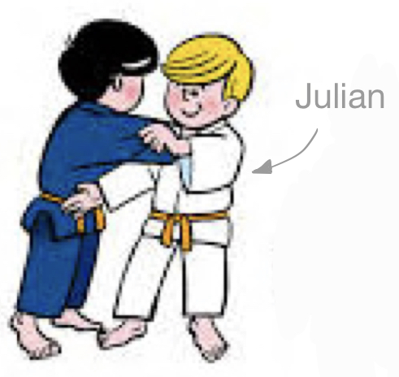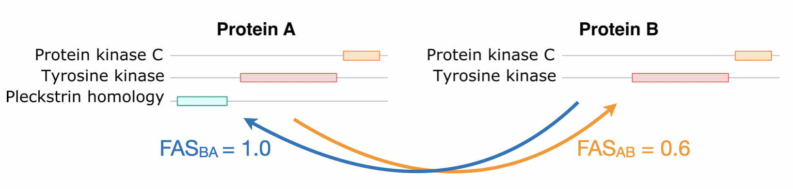
Dosch et al. (2018),
https://doi.org/10.1093/bioinformatics/btad226
Use cases
Reproduced from Figure 1, Moretti et al. (2017),
https://doi.org/10.1038/s41598-017-16947-5
 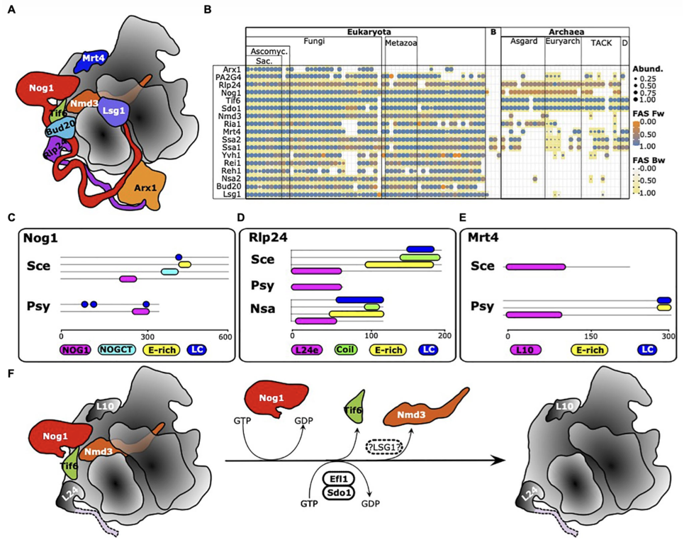
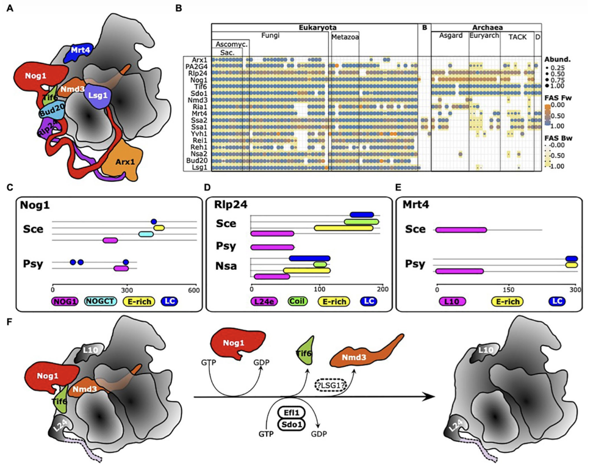
Reproduced from Figure 8, Birikmen et al. (2021),
https://doi.org/10.3389/fmicb.2021.739000
Reproduced from Figure 4, Tran et al. (2025),
https://doi.org/10.1093/molbev/msaf120
Summary
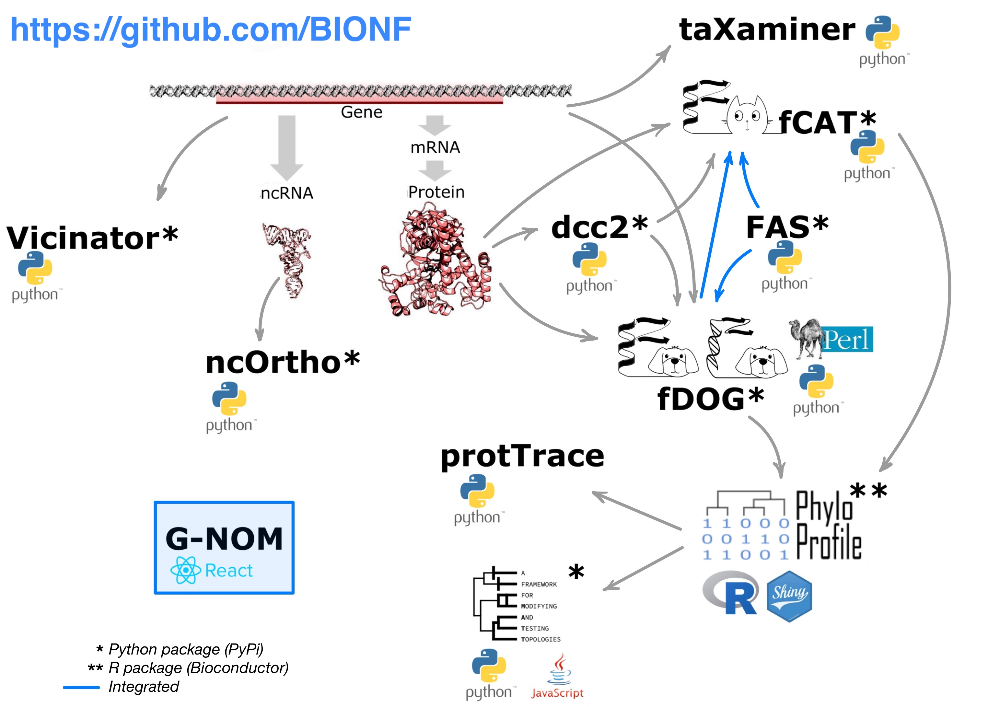
Presentation link
https://trvinh.github.io/bionf_universe_me/slides/#/